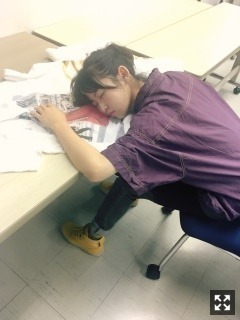
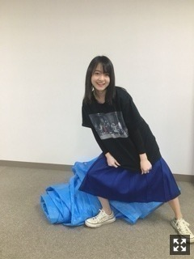

《伊藤万理華の脳内博覧会》
GALLERY X BY PARCOでの
開催は終了致しました。
気になっちゃってどうしても
様子を見たくなって
こっそり渋谷に行ったりした！
かっこいいギャラリーだったなあ、
本当にたくさんの人が来てくれて、
興味持ってくれてて、、不思議な気持ちだ。
お越し下さった皆様ありがとうございました。
本日から、京都 北野天満宮発
KYOTO NIPPON FESTIVAL
にて開催されます。
設営でお邪魔する前にお参りしました。
由緒正しき場所で個展が開かれることの
違和感と感動とプレッシャーが凄まじい。
制作から設営、開催まで含めて
短いスパンでありましたが、
その間いろんなことを考えてました。
どこを見ても違う姿で違う空間で
ただただ色で溢れててチカチカしてて
歌ってて踊ってて泣いてて笑ってて
このために、この個展のために
作ったものだとしても
伝えたいのは本質的なところはもちろん
この6年間で経験したもの。
個人PVとかショートフィルムが
わかりやすいけど、
そういう、いろんな自分が
一緒くたになっているのを見ると、
とても面白いです。
いろいろやってたなあと。
すごく普通のことを言ってますが、、
これからも、なんの表現か知らないけど
いろいろやるんだろうなあ、
未完成のままだったけど、
それもそれで私だなあ
それでもこうして
来てくれる人がいるんだから
これからも頑張ろう
って思います。
10月21日(土)〜12月3日(日)
秋から冬にかけて長期で行われる
伝統文化、アート、食、音楽の融合、
どなたでも楽しめる素敵なイベント！
KNF初出しのショートフィルム、
そして限定グッズもあります！
ちらちらと展示物も増えてます。
オリジナルショートフィルム
『トイ』『はじまりか、』
この二つの作品で、
脳内博覧会が完結します。
お見逃しなく！

↑個展関連のもろもろ更新してます。
まりか